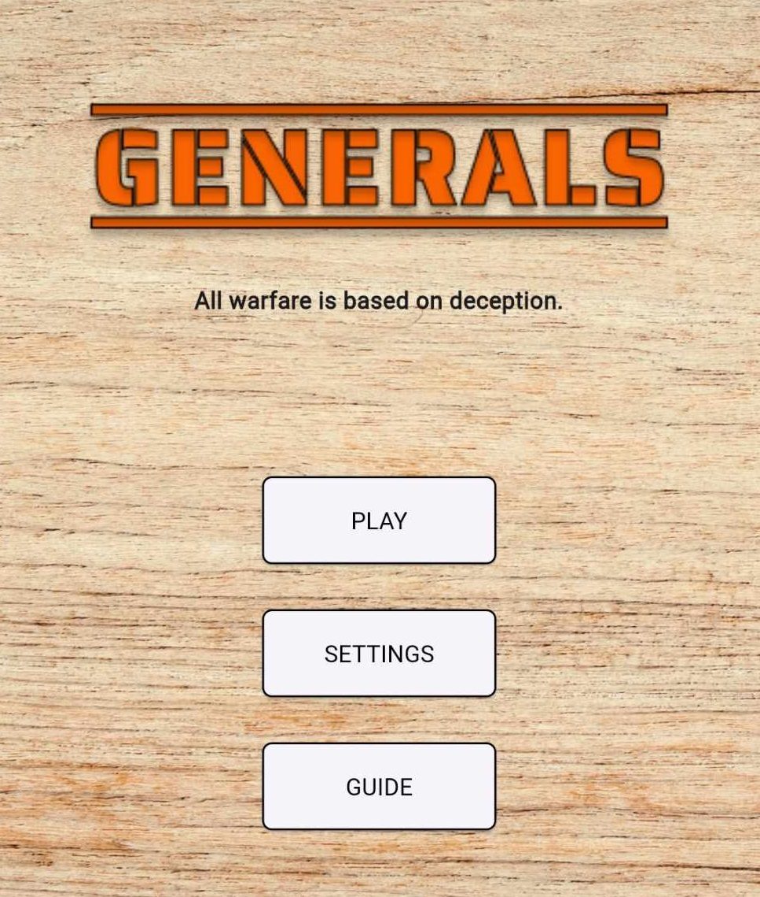

About Me
Hello, I'm Jorge Guiller Gonzales
a BS computer Science Student in
the University of the Philippines
Visayas Miagao Campus
I aspire excellency in my degree
and I do so by accumulating
experience from work
The fields that I am most interested
in are Game Development, Artificial
Intelligence, Machine Learning, Data
Science, Web Development, and Mobile
Development.
Projects
Project Kurdam

Project Kurdam is a 2d turn-based Game
inspired by Pokemon, D&D, and Wicher Games.
The game is based on Philippine Folklore.
Generals

Generals is a turn-based strategy game
that originated from the Philippines.
The current mode of play is pass and play.
Skills
Web Development
6.5/10
I have decent experience in web development due to previous
class projects that requires website development. Most of
these websites are local and undeployed. My strength in
this field is creating scripts and databases.
Game Development
8.5/10
The game development engine that I am familiar and have decent
and considerable experience is Unity Engine. One of my biggest
game project is built in Unity Engine. My strong suit in this
field is building systems, mechanics, and components.